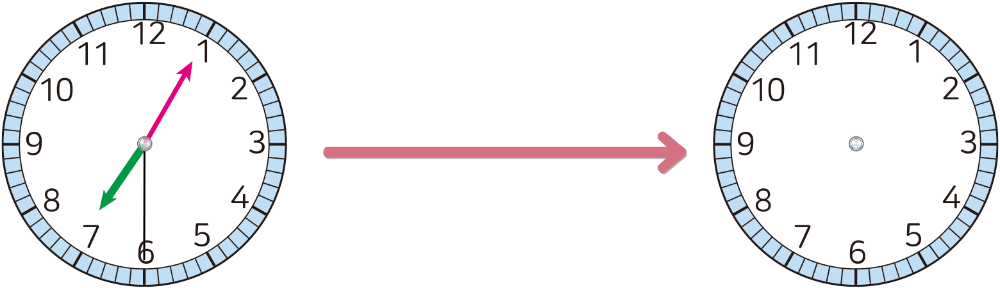
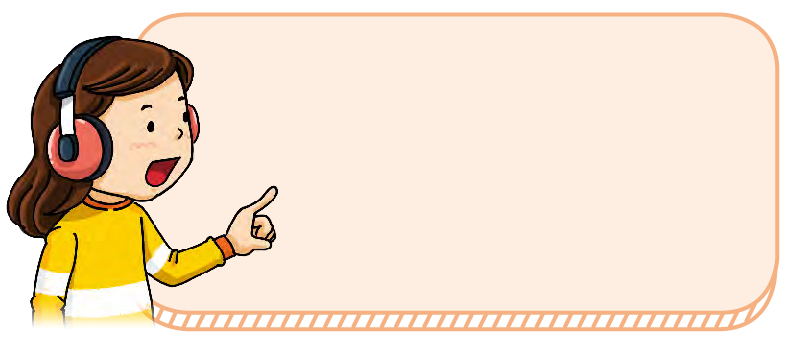

- 개념 정리
- 1
- 2
- 3
- 4
- 5
- 6
-
-
시간의 합은 시는 시끼리, 분은 분끼리, 초는 초끼리 더합니다.
2 시 30 분 39 초 ＋ 1 시 15 분 15 초 3 시 45 분 35 초 -
-
1 안에 알맞은 수를 써넣으세오.
5 시간 25 분 20 초 ＋ 3 시간 10 분 16 초 8시간 35분 36초 6시 45분 20초＋1시간 5분 7초＝시간7분50초27 -
2 우주는 저녁 식사를 20분 15초 동안 했습니다. 우주가 저녁 식사를 시작한 시각이 오후 7시 5분 30초일 때 저녁 식사를 끝낸 시각을 구해 보세요.
저녁 식사를 시작한 시각저녁 식사를 끝낸 시각7 시 5 분 30 초 ＋ 20 분 15 초 7시 25분 45초 -
3 지금 시각은 오후 4시 16분 40초입니다. 은하가 탈 마을버스는 5분 30초 후에 도착합니다. 은하가 탈 마을버스가 도착하는 시각을 구해 보세요.
4 시 16 분 40 초 ＋ 5 분 30 초 4시 22분 10초 -
4 하늘이가 도서관에서 책을 읽은 시간은 다음과 같습니다. 하늘이가 도서관에서 책을 읽은 시간을 구해 보세요.
그림책 동화책 읽은 시간 1시간 27분 30초 1시간 15분 10초 시간2분42초20 -
5 샛별이의 계산이 잘못된 까닭을 써 보세요.
동요를 8시 5분부터
2분 50초 동안 들었으니까
동요를 듣고 난 시각은 이렇게
계산할 수 있어요.8 시 5 분 ＋ 2 분 50 초 10 시 55 분 까닭예시는 시끼리, 분은 분끼리, 초는 초끼리 더해야 하는데 시와 분을 더하고 분과 초를 더해서 계산이 잘못됐습니다. -
6 샛별이가 동요를 듣고 난 시각을 구해 보세요.
동요를 8시 5분부터
2분 50초 동안 들었으니까
동요를 듣고 난 시각은 이렇게
계산할 수 있어요.8 시 5 분 ＋ 2 분 50 초 10 시 55 분 8시 7분 50초